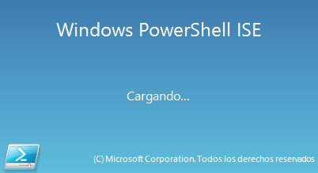
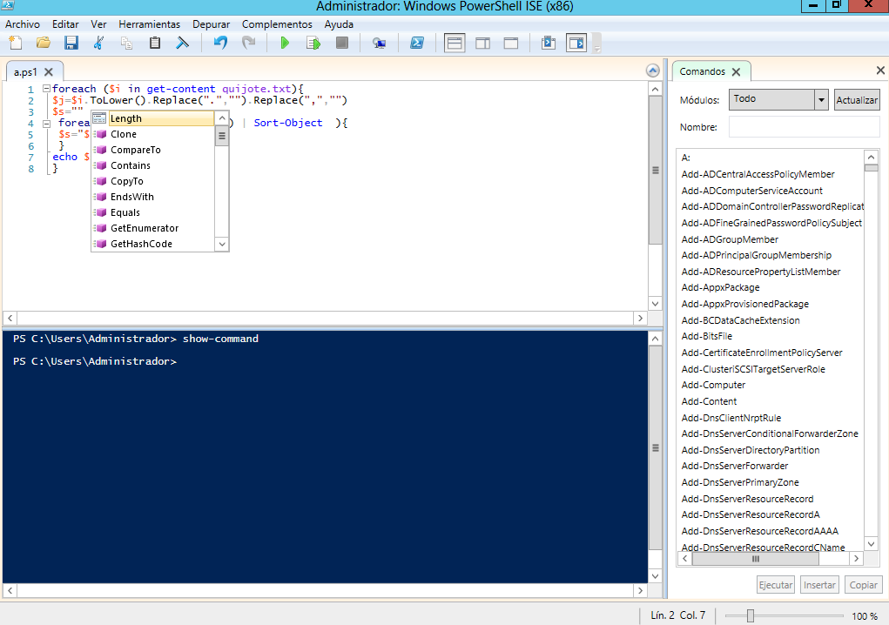

PowerShell Scripting¶
Habilitar ejecución de scripts : Set-ExecutionPolicy Unrestricted
Variables y cadenas¶
$a=5
echo a #obtenemos a
echo $a #obtenemos 5
$a=2
$b=3
$c=$b+$a
echo $c #obtenemos 5
$a="cadena"
echo $a #cadena
echo $a.Replace("ca","CC") #CCdena
echo $a.split("a")
#c
#den
#
echo $a.Split("a")[0]
#c
echo $a
echo $a.Substring(2,4) #dena
echo $a.Remove(2,4) #ca
echo $a.Contains("a") #True
echo $a.IndexOf("a") #1
echo $a.Replace("ca","Ca") #Cadena
echo $a.Equals("cadena") #True
echo $a.Length #6
echo $a.Contains("an") #False
echo $a.ToLower() #cadena
echo $a.ToUpper() #CADENA
#....
Get-Random # numero aletorio
Get-Random -Minimum 1 -Maximum 10
[Convert]::ToString($decimal, 2) #pasar a binario
$a="$pwd" #obtenemos la salida del comando pwd, no es lo mismo que $a=$(pwd)
echo $a
$a="notepad"
&$a # & Permiten ejecutar un texto como si fuese un comando
Operadores¶
$a=11
$b=5
$c=$a-$b
echo $c # 6 resta
$c=$a+$b
echo $c #16 suma
$c=$a*$b
echo $c #55 multiplicación
$c=$a/$b
echo $c #2,2 división
$c=$a%$b
echo $c #1 resto o modulo
Operadores de asignación¶
$a=6
$a+=2 ; echo $a # 8, es lo mismo que $a=$a+2
$a-=2 ; echo $a # 6, es lo mismo que $a=$a-2
$a++ ; echo $a # 7, es lo mismo que $a=$a+1
$a-- ; echo $a # 6, es lo mismo que $a=$a-1
$a/=2 ; echo $a # 3, es lo mismo que $a=$a/2
$a*=3 ; echo $a # 9, es lo mismo que $a=$a*3
$a%=3 ; echo $a # 0, es lo mismo que $a=$a%3
Argumentos de entrada¶
echo "dame un entero" #ponemos " para que aparezca en la misma linea
$Name = Read-Host #lo interpreta como cadenas
#si queremos pasar Name a un entero:
$a = $Name -as [int]
$a = [int] $Name
PS> $Name=Read-Host
2
PS> echo $($Name*$Name)
22
PS> $a = [int] $Name
PS> echo $($a*$a)
4
PS> cat .\argst.ps1
echo "tenemos $args parámetros de entrada"
echo "El argumento 0: $($args[0])"
echo "El argumento 1: $($args[1])"
PS> .\argst.ps1 1 2 3
tenemos 1 2 3 parámetros de entrada
El argumento 0: 1
El argumento 1: 2
PS> cat .\argst.ps1
foreach ($i in $args)
{
echo $i
}
PS> .\argst.ps1
1 dos tres 1 dos tres
Evaluación de condiciones¶
7 -eq 7 #True
7 -eq 8 #False
3 -gt 2 #True
Operadores lógicos¶
(5 -gt 1) -And (5 -lt 10) #True
(5 -gt 1) -And (5 -lt 10) #True
(5 -gt 1) -Or (5 -lt 1) #True
(5 -gt 1) -Xor (5 -lt 1) #True
-Not (5 -lt 1) #True
Comparación de cadenas¶
«hola» -eq «hola» #True «hola» -eq «hoa» #False «hola» -ne «hoa» #True «hola» -ne «hola» #False
Estructuras condicionales con if¶
$numero = -10
If ($numero -gt 0) {
echo "$numero es mayor que 0"
}
If ($numero -gt 0) {
echo "$numero es mayor que 0"
}else{
echo "$numero es negativo"
}
Bucles con for¶
for ($i=0;$i -lt 10;$i++){
echo $i
}
Bucles con While¶
$i = 0
While ($i -le 10) {
echo $i
$i +=1
}
Bucles con Until¶
$i = 0;
do {
echo $i
$i +=1
}
until ($i -gt 10)
Bucles con Foreach¶
foreach ($num in 1,2,"hola",4,5) {
echo $num
}
Archivos¶
echo "usuario,grupo" > usuarios.csv
echo "user01,group01" >> usuarios.csv
echo "user02,group02" >> usuarios.csv
echo "user03,group03" >> usuarios.csv
echo "user04,group04" >> usuarios.csv
Test-Path usuarios.csv #True ver si existe
#Leer el archivo linea a linea
foreach ($i in get-content usuarios.csv){
echo $i
}
#Podemos importarlo desde un csv
$A = Import-Csv -Path usuarios.csv
echo $A.usuario
#Podemos recorrer los valores
foreach ($i in $A){
$u=$i.usuario ; echo "usuario = $u"
}
Funciones¶
function foo($a, $b, $c) {
"a: $a; b: $b; c: $c"
}
foo 1 3 5
# a: 1; b: 3; c: 5
Windows PowerShell ISE¶
 